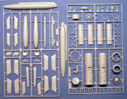

{kind=link}
{kind=link}
{kind=link}
{kind=link}
{kind=link}
{kind=link}
{kind=link}
{kind=link}
{kind=link}
{kind=link}
{kind=link}
{kind=link}


Trumpeter 1/32 Republic F-105D Thunderchief
Kit #2201
MSRP $139.95 $104.95 from Great Models Web Store
Images and text Copyright © 2008 by Matt Swan
Developmental Background
The Air Force called it the Thunderchief but the crews called her “Thud” because that was the sound she made when she crashed. Republic Aviation began development of the F-105 in 1952 as a direct replacement for the F-84F Thunderflash. The design went through well over 100 configurations before the final single seat supersonic concept was settled on. Initial interest with the Air Force was high and an introductory order for 199 aircraft was placed. It did not take long before this was reduced to 46 aircraft. One of the primary requirements of the airframe was to be able to deliver a nuclear bomb. While this mission profile was thankfully never employed the resulting bomb load capability of the type exceeded that seen on World War 2 B-17s. In the upcoming conflict in Vietnam this would prove most useful. The prototype first flew in 1955 and the type began entering service in 1958. Ultimately the design resulted in the largest single engine fighter ever employed by the USAF.
During the early days of the Vietnam War the Thunderchief flew over 20,000 missions as the primary strike bomber. Two seat versions were developed as the F and G which were used as Wild Weasel aircraft tasked with suppression of enemy air defenses. These aircraft and their flight crews were the first units in enemy airspace and the last units out. As the war progressed the ground interdiction role was taken over by F-4 Phantoms but the Wild Weasel variation continued in service until 1984. The Thunderchief was a large, fast aircraft with a smooth ride and impressive load capability but lacked the high maneuverability to be an effective interceptor. Regardless the type did manage to rack up a kill record of 27.5 enemy aircraft during the Vietnam War.
The Kit
When this kit arrived on my doorstep all I could think was ‘Wow, that’s one big box!’ and indeed that is what is required to handle this behemoth of a fighter jet. This thing is freaking huge! The model itself is considerably large than the box as the fuselage is broken down into three sections just to fit. Just a quick comment on the box and packaging first, the box is made from heavy duty cardboard that will easily survive for many years in a stash situation if you are like me and buy way more models than you can build right away. The sprues are mostly all packaged in separate poly bags which is good for preventing shipping damage and to contain any small parts that may become dislodged during shipment. Inside the primary box is a secondary box containing the vinyl tires, clear parts, and photo etched parts and various small metal parts. Everything fits snuggly into the primary box with little room to shift during transit. All in all a very well packaged kit with good survivability.
Looking at the actual parts, and boy are there a lots of parts here, everything is displaying a nice smooth surface with excellent finely engraved panel lines on the wing and fuselage. Interior parts such as gear bays and cockpit sidewalls have adequate raised detail. The kit includes a complete engine assembly which does more for giving the modeler options than for displaying an engine inside the aircraft. If you are going to build this with the removable tail only a portion of the engine will be visible and none of the forward fan detail will be seen. The kit also gives us pretty well detailed cannon with feed drum and ammo belts that can be displayed with the access panel opened. The refueling probe can be installed open or closed. In the front office we get seatbelts molded in place on the plastic parts with the typical clear instrument panel that Trumpeter likes to use which includes an acetate instrument backing sheet. Overall detail is adequate here but the serious modeler may want to look at the aftermarket to really dress this area up.
Probably the most complex area of assembly for the modeler on this kit is the wing. Trumpeter has included a complete set of photo etched operational hinges for the wing leading edges, ailerons and rudder. For some reason they put all this effort into these control surfaces yet did not carry it on to the elevators – go figure. Flaps can be installed either up or down. No matter how you cut it the wing assembly will take some careful study and judicious use of superglue. Up front the nose cone can be displayed in a closed position or open with the radar shown. The F-105 could carry an impressive bomb load and Trumpeter has provided us with plenty of iron to load this thing down with. We get Mk-82 and M-117 bombs, a pair of ECM pods, napalm canisters and AGM-12Bs, AGM-78s, AGM-45As and three large fuel tanks. If you like you can really load this thing heavy.
Overall we get a model that will have 333mm wingspan and a length of 613mm comprised of over 514 pieces of plastic, metal, vinyl and metal parts, a very impressive kit indeed.
You may click on these small images to view larger pictures

Decals and Instructions
Instructions are as large as the kit, we get a 24 page booklet that opens with some basic generic assembly tips and safety instructions followed by two full pages of parts maps. There are in excess of thirty three exploded view assembly instructions that include some alignment tips, color callouts by FS number and color name. One page contains a load-out key for the various munitions. In addition to the assembly instructions is a full color A-3 sheet printed front and back with decal and painting instructions for two aircraft. Both in camouflage dress. The full color guide also contains painting and marking instructions for the munitions.
Trumpeter was not screwing around when it came to the decals, they went to Two Bobs here in the USA to design their markings. We have one full and one half sheet of markings that cover two Vietnam era Thunderchiefs. The decals are classic Two Bobs material with excellent graphics, sharp detail, good color density and thin enough to snuggle down over just about anything. They include all the appropriate unit markings along with plenty of service stencils and warning markings. Previous experience with Two Bobs products indicates they will behave well with all standard setting solutions.
Conclusions
This is a very impressive kit. Detail level is adequate for most modelers, parts engineering is good and parts quality is excellent. Instructions are very good; decals are top of the line. I’m not a huge fan of the clear instrument panel that Trumpeter likes to use but the acetate instrument detail is nice. The seat is probably one of the weakest points of the kit for detail and could be replaced with the Aires set for an improved look. The complex hinge assemblies in the wing will give some modelers trouble and will require special care during construction. Overall I think this is an excellent kit for modelers of medium and above skill levels and give it a good recommendation.